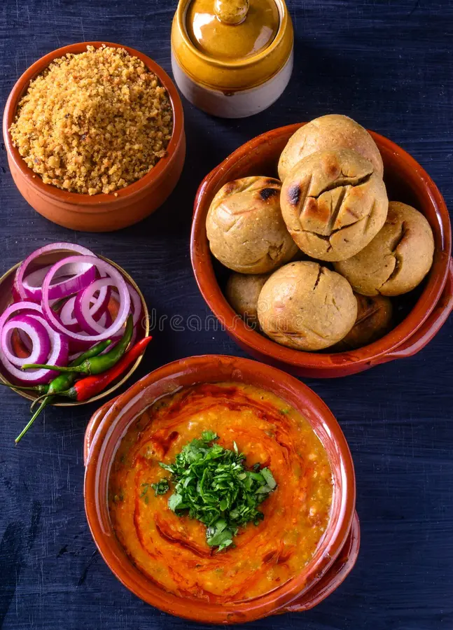
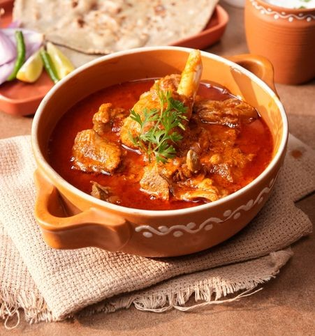

Rajwada Rasoi

Welcome to Rajwada Rasoi, where the vibrant heritage of Rajasthani cuisine meets the grandeur of royal hospitality. Our kitchen brings to life centuries-old culinary traditions shaped by the majestic Thar desert and the historic Rajput courts. From the comforting, earthy flavors of our signature Dal Baati Churma to the fiery, slow-cooked perfection of Laal Maas, every dish is crafted using pure ghee, indigenous spices, and time-honored techniques passed down through generations. Whether you are seeking a grand festive feast or a soulful, comforting meal, we invite you to step into a world of rich flavors, warm hospitality, and an unforgettable sensory journey.Our specilaties are:
Dal Bati Churma is a legendary three-in-one meal from rajasthan that perfectly balances savory, spicy and sweet on a single plate.

Laal maas, a fiery Rajasthani curry slow-cooked with tender mutton, Mathania chillies, hand-ground spices bold, smoky, and deeply flavorful, made for those who love their food unapologetically intense.

For more items like this check our menu and please pre-book the table.